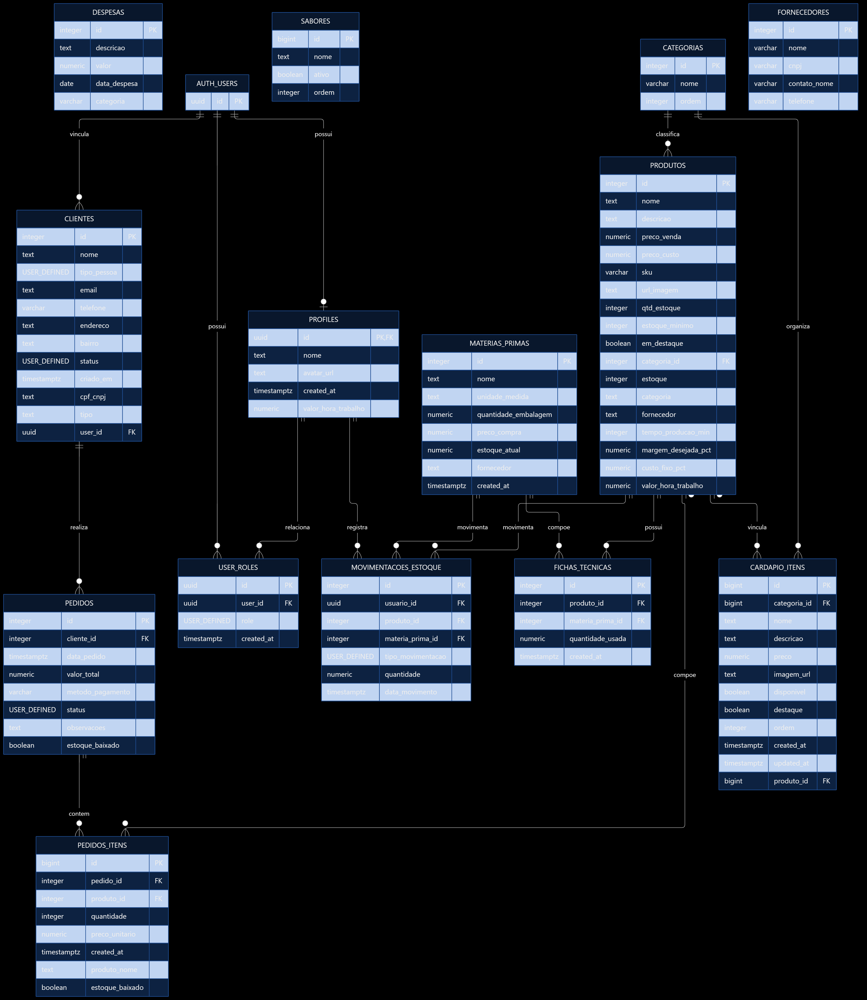
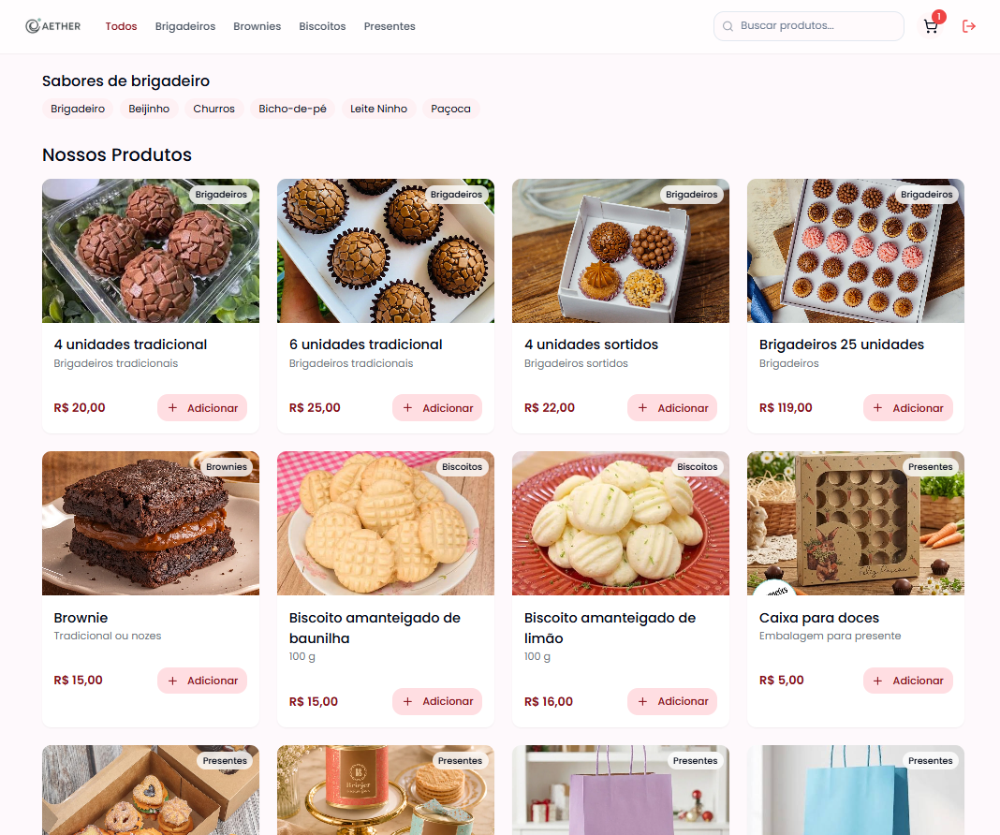
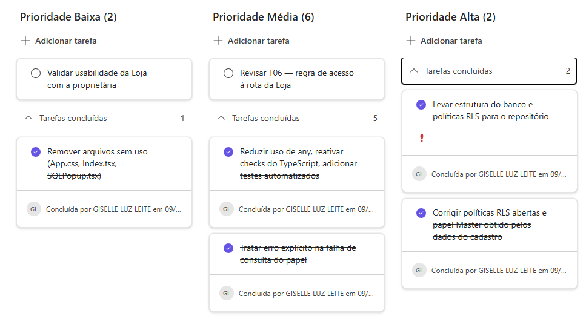

Integrantes do Grupo
Equipe responsável pelo desenvolvimento do sistema AETHER:

Maria Eduarda Belentani Endo, 19
Sistemas de Informação
Giselle Luz Leite, 19
Sistemas de Informação

Julia de Melo Almeida, 20
Sistemas de Informação

Felipe Santos, 25
Ciências da Computação

Ryan Natanael da Silva, 20
Ciências da Computação
Quarto Termo: Reestruturação e Validação do Software
Reestruturação do Ambiente
Nos semestres anteriores, o Aether foi desenvolvido com o auxílio da plataforma Lovable, mas nunca chegou a ser usado na rotina de um cliente real. Nesse intervalo, o banco de dados hospedado no Supabase foi pausado por inatividade, o que causou falhas de autenticação. Por isso, a equipe retirou o código da plataforma e montou uma estrutura própria: um novo projeto no Supabase com acesso compartilhado entre os integrantes, o código versionado em um repositório no GitHub e a aplicação publicada no Vercel.
Após a publicação, o cadastro apresentou o erro Failed to fetch. A análise da aba Network do navegador mostrou que a aplicação ainda se comunicava com o projeto antigo por causa de um valor padrão gravado no código. A solução foi remover as credenciais do repositório e configurar as variáveis de ambiente no Vercel.
Nova Modelagem de Banco de Dados
O banco de dados foi reestruturado no novo projeto do Supabase. A modelagem passou a incluir as tabelas de autenticação e perfis (auth_users, profiles e user_roles), que sustentam o controle de acesso por perfil, além das tabelas de clientes, pedidos, produtos, matérias-primas, fichas técnicas, movimentações de estoque e itens do cardápio.

Diagrama entidade-relacionamento do AETHER no quarto semestre.
Análise do Código-Fonte e Problemas Identificados
O Aether é uma Single Page Application em React e TypeScript, sem API própria: o Supabase gera a API a partir das tabelas e o navegador a acessa diretamente. Com isso, a proteção dos dados depende das políticas de Row Level Security (RLS). Os problemas encontrados foram classificados por criticidade, combinando o impacto de uma eventual exploração com a facilidade de ela ocorrer, com base na norma ISO/IEC 25010.
| ID | Problema identificado | Criticidade | Situação |
|---|---|---|---|
| P01 | Políticas RLS abertas e papel Master obtido pelos dados do cadastro (script SQL do banco novo) | Crítico | Corrigido |
| P02 | Estrutura do banco e políticas RLS fora do repositório | Alto | Corrigido |
| P03 | URL e chave pública do banco antigo como valor padrão no código-fonte | Médio | Corrigido |
| P04 | Divergência entre as permissões do menu e as das rotas | Médio | Corrigido |
| P05 | Atalho de login Master com senha padrão | Médio | Corrigido |
| P06 | Falha na consulta do papel tratada em silêncio | Médio | Corrigido |
| P07 | Pedido gravado em duas etapas sem transação e baixa de estoque feita no navegador | Médio | Corrigido |
| P08 | TypeScript com verificações desligadas, 64 usos do tipo any e ausência de testes automatizados | Médio | Corrigido |
| P09 | Arquivos sem utilização funcional identificada (App.css, Index.tsx, SQLPopup.tsx) | Baixo | Corrigido |
Acesso do Cliente e Loja Virtual
Até o semestre anterior, o Aether atendia apenas quem opera o negócio. Nesta etapa foi implementado o perfil Clientes, que estende o acesso ao consumidor final da Bibi Brigadeiros. A Loja virtual apresenta o catálogo organizado por categorias, onde o cliente busca produtos, consulta preço e descrição e adiciona itens ao carrinho para fazer o pedido.

Tela da Loja do sistema.
O perfil dos usuários passou a ser armazenado em uma tabela específica, com acesso inicialmente pendente. Somente o Master altera permissões, por meio de uma Edge Function que verifica sua autorização, e as políticas de RLS foram revisadas para que cada cliente acesse apenas os dados permitidos.
Testes de Qualidade e Validação
Os testes de QA verificam a conexão com o banco, a autenticação, as permissões de cada perfil e o acesso às rotas, orientados por critérios de aceite. Os resultados são registrados para acompanhar as falhas encontradas, o comportamento esperado e o obtido.
| ID | Cenário | Resultado esperado | Resultado obtido | Status |
|---|---|---|---|---|
| T01 | Login com credenciais válidas de cada perfil | Acesso às telas permitidas ao perfil | Acesso restrito e direcionado conforme o perfil autenticado | Aprovado |
| T02 | Login com senha incorreta | Mensagem de erro, sem acesso | Exibição de mensagem de erro de autenticação, acesso bloqueado | Aprovado |
| T03 | Cadastro de nova conta | Conta criada sem permissões, com redirecionamento à tela de acesso pendente | Usuário cadastrado sem privilégios elevados, redirecionado corretamente | Aprovado |
| T04 | Cadastro enviando o papel Master nos dados do cadastro | Papel ignorado; conta criada sem permissões | Atributo de privilégio ignorado pelo banco, conta criada como padrão | Aprovado |
| T05 | Funcionário digita a rota de Estoque na barra de endereço | Mensagem de acesso negado | Rota bloqueada com exibição de aviso de acesso restrito | Aprovado |
| T06 | Usuário sem permissão digita a rota da Loja | Comportamento conforme a regra definida para a rota | Acesso permitido ou negado estritamente conforme a regra de perfil | A Revisar |
| T07 | Publicação sem as variáveis de ambiente do banco | Erro de configuração explícito, sem conexão ao banco antigo | Emissão de erro claro no console/interface, sem fallback inseguro | Aprovado |
| T08 | Falha na consulta do papel do usuário | Mensagem de erro, e não o redirecionamento silencioso | Exibição de mensagem informativa de erro em vez de redirecionamento mudo | A Revisar |
| T09 | Cliente consulta, pela API, pedidos de outro Cliente | Nenhum pedido alheio retornado | Nenhum pedido de outro Cliente retornado pela API | Aprovado |
| T10 | Cliente tenta criar, editar ou excluir produto ou categoria | Operação negada pelo banco | Operação rejeitada | Aprovado |
Dos 10 cenários, 8 foram aprovados e 2 (T06 e T08) seguem em revisão.
Kanban do Projeto
Os problemas identificados e as melhorias necessárias foram organizados em um backlog no Kanban do Microsoft Planner, distribuído por prioridade. A organização prioriza a correção de falhas estruturais, de autenticação e de controle de acesso antes da inclusão de novas funcionalidades.

Kanban do projeto no Microsoft Planner.
Conteúdos Principais do PI
Abaixo, os materiais desenvolvidos ao longo do Projeto Integrador. Orientador: Prof. Me. Leonardo Reitano.
Acessar Artigo Acessar BannerTerceiro Termo: Desenvolvimento do Projeto
Kanban do Projeto
A abordagem foi mantida ao longo do projeto devido à sua eficiência no acompanhamento das entregas, na divisão de responsabilidades e na colaboração entre os integrantes.

Quadro Kanban utilizado no gerenciamento das atividades do projeto AETHER, permitindo organização, acompanhamento e distribuição das tarefas de desenvolvimento.
Remodelagem de Banco de Dados
A estrutura do banco de dados do AETHER foi replanejada para garantir integridade e eficiência no gerenciamento das informações da confeitaria.

Diagrama Entidade-Relacionamento (DER) do sistema AETHER, apresentando a estrutura do banco de dados e a integração entre estoque, pedidos, produtos, usuários e fichas técnicas.
Automação de Produção e Estoque Inteligente
Foi desenvolvido um módulo de automação de produção baseado em Ficha Técnica, responsável por controlar insumos, custos e estoque dos produtos. Também foi criada a função “Produzir”, que automatiza a fabricação ao verificar a disponibilidade dos materiais, realizar a baixa das matérias-primas e atualizar automaticamente o estoque do produto final.

Fluxo automatizado do processo de produção e baixa de estoque.
Dashboard Analítico e Business Intelligence
O sistema passou a incorporar funcionalidades de BI, transformando dados operacionais em indicadores estratégicos para apoio à tomada de decisões. O dashboard desenvolvido permite acompanhar métricas como margem de lucro, custos de produção, movimentação de estoque e desempenho de vendas.

Dashboard analítico do sistema AETHER.
Acesse o siteConteúdos Principais do PI
Abaixo, os materiais desenvolvidos ao longo do Projeto Integrador.
Acessar Artigo Acessar BannerSegundo Termo: Desenvolvimento do Projeto
Modelagem de Banco de Dados
A estrutura do banco de dados do AETHER foi planejada para garantir integridade e eficiência no gerenciamento das informações da confeitaria.

O DER representa entidades como Clientes, Pedidos, Produtos, Ingredientes, Usuários e Controle de Estoque.
Gestão de Projetos
Matéria do quarto semestre de Sistemas de Informação.

05/09/2025
Primeira reunião do grupo onde foi definido todas as tarefas.

19/09/2025
Segunda reunião do grupo e primeira com o professor orientador Julio Cesar onde foram definidos todos os caminhos do projeto e referências bibliográficas.

03/10/2025
Terceira reunião do grupo onde mostramos ao professor orientador o artigo do projeto, onde havia a introdução e metodologia científica.

05/10/2025
Reunião on-line com a empresa BibiBrigadeiros para alinhar estratégias e pensamentos.

10/10/2025
Reunião on-line feita para definição da modelagem de dados para o projeto.

28/10/2025
Reunião feita para mostrar o site do projeto ao professor orientador e alinhar os últimos detalhes.
Kanban do Projeto
Utilizamos o Microsoft Planner para organizar as tarefas e monitorar o progresso do desenvolvimento. Essa abordagem facilitou o acompanhamento das entregas e a colaboração entre os integrantes.

O Kanban ajudou a priorizar tarefas, dividir responsabilidades e visualizar o status (A fazer / Em progresso / Em revisão / Concluído). Foi fundamental para manter sincronia entre os membros.
Demonstração do Sistema
Acesse o site interativo criado para demonstrar o funcionamento do sistema AETHER e a integração com o banco de dados.

O site contém prompts e exemplos que mostram a comunicação com o banco de dados e as principais telas do sistema (cadastro, pedidos, estoque, relatórios).
Acesse o siteConteúdos Principais do PI
Abaixo, os materiais desenvolvidos ao longo do Projeto Integrador.
Acessar Artigo Acessar Banner